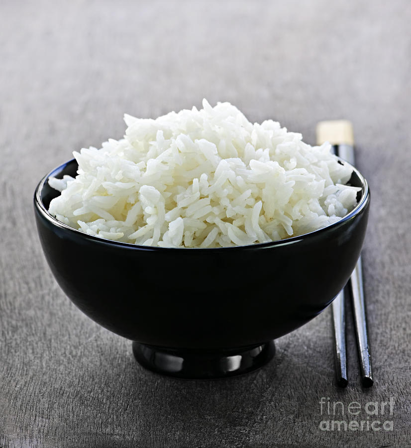

Other vegetables such as corn, edamame, and peppers, as desired
1 1/2 tbsp butter
2 tbsp soy sauce or oyster sauce
1 tsp sesame oil
Salt and pepper, to taste
Meat or tofu (optional)
Other seasonings to taste
Instructions
PART 1 Preparing to Cook
Cook 4 cups white or brown rice. Rice generally requires a 2:1 water to rice ratio.
The duration of cooking the rice depends on whether the rice is brown or white and long or short grain. Most
rice cooking consists of boiling the water, adding the rice, then simmering without stirring for between 20-40
minutes, depending on the kind of rice. Consult the rice packaging for specific cooking instructions.

Refrigerate the rice. Chilled rice fries better than warm rice.[2] It is best to make the rice a day ahead of time,
but if you cannot do that, then allowing it to cool for several hours will suffice.
Chop the vegetables. Because fried rice cooks very quickly over high heat, it is best to prepare all
of the vegetables ahead of time. You may want to group vegetables together in bowls based on how long they cook.
For example, you could group onion, garlic, and carrots together, peas and edamame together, and spices
and sauces together.
Scramble the eggs. Pre-scramble the two eggs in a small pan over medium heat, then remove them from the heat and
chop them into small pieces. You will add them to the fried rice towards the end of the process, but it is easier
if this step is done before you start cooking the other ingredients.
Cook any meat that you wish to include. A variety of protein sources such as chicken, pork loin, ham, beef,
or shrimp can be included in the fried rice. It is best to cook the meat ahead of time to ensure that it reaches
the proper internal temperature before tossing it in with the fried rice.
Dice the meat before or after cooking it so that it is ready to add to the rice.
PART 2 Cooking the Fried Rice
Heat the wok or pan. The cooking surface needs to be very hot before you begin cooking.
It is best to use high or medium-high heat, depending on your heat source and cooking surface.
Add the butter or (if you don't have butter) oil. While some recipes suggest using oil,
most hibachi restaurants use butter, and many people who have experimented with different oils
at home have found that butter produces the most authentic tasting rice.[4] Heat the butter until it is melted,
but before it browns.
Sautee the onions, carrots, and garlic. Spread the vegetables around the pan so that they cook evenly.
Continue to saut� for several minutes, until the onions begin to turn transparent.
Add the other vegetables. Add peas, edamame, corn, and any other vegetables you wish to add to the fried rice.
You may consider peppers, mushrooms, broccoli, zucchini, squash, or a leafy green such as kale or spinach
for a healthy twist.[5] Cook for several minutes, until harder vegetables begin to soften.
Spread the rice on top of the vegetables. Pour the cold rice out on top of the cooking vegetables,
then begin to stir it to mix the rice and vegetables together evenly. Continue cooking on
medium high or high heat
Brown the rice and vegetables. Cook until the rice turns an even golden-brown color. Be sure to stir
frequently and try not to make the mixture too thick by putting too much in the pan at one time
PART 3 Finishing the Fried Rice
Add the protein and spices. When the rice has browned nicely[7] and the vegetables are done,
add in the salt, pepper, spices, chopped, cooked egg, and the cooked meat(s). Continue stirring while the ingredients re-heat and the flavors blend together.
Consider adding gomasio spice for an authentic taste. This is a combination of salt, seaweed, sugar,
and sesame seeds and can be found in the international food aisle at the grocery store.
Drizzle with sesame oil and sauces. Drizzle with sesame oil and other sauces such as soy sauce or oyster sauce.
These sauces are meant to be added after cooking and should be added just as the meal is removed from the heat.
Divide into portions. Serve the fried rice in bowls or on plates. You may want to garnish the dish
with some toasted sesame seeds or green onions and serve with a sauce such as soy or yum yum sauce
Serve while hot. Serve while the rice is still hot.[10] If reheating leftovers is necessary,
be sure to do so in the pan or wok, not in the microwave.